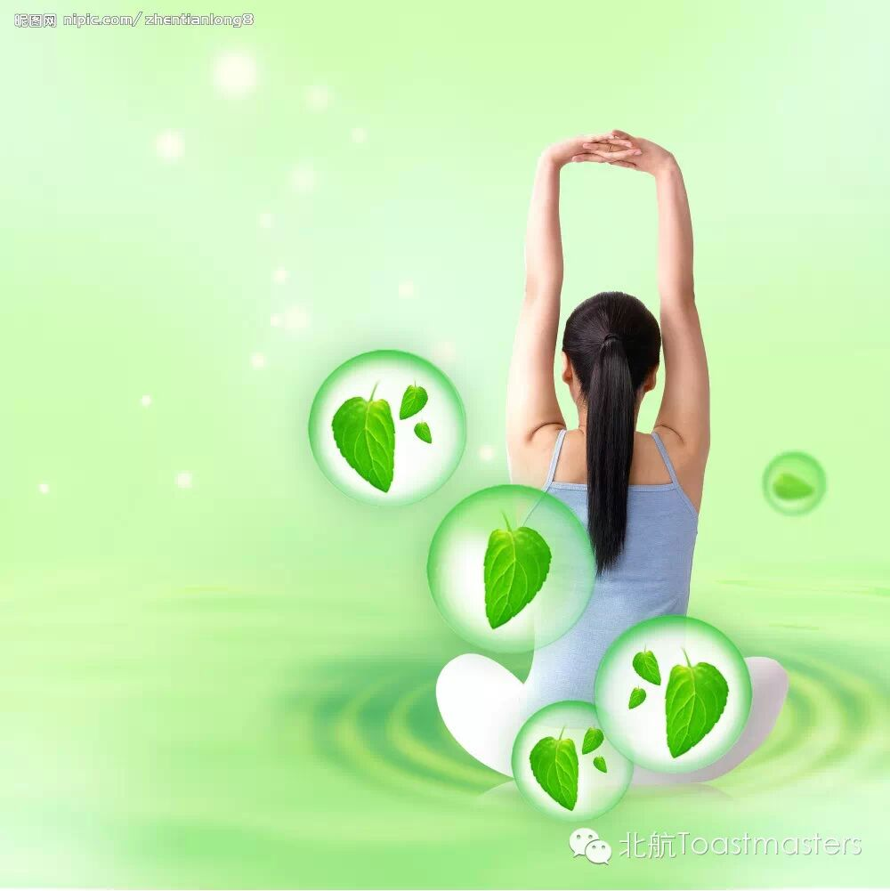
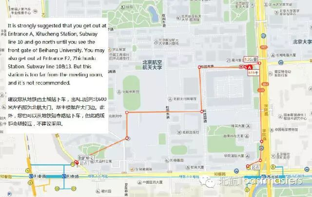

Time: 19:30-21:30, Friday, April. 24
Venue: Room B208, New Main Building, Beihang University
Toastmaster: Vicky
Table Topic Master: Jane
Table topic section
There is not so much discussion about the needs to stay in control as about how to control people. The real secret is that control is a deep, deep need. When we feel out of control, we experience an extremely uncomfortable tension.
Getting a good sense of control of one’s life is of considerable importance. Wanna learn about how to get yourself well controlled and how to relieve yourself from a world out of contol? Let’s look forward to this week’s meeting!
1. Improve Your Recovery Rate
cc2 Grace
One person says it took two weeks to recover since he caught a cold, and another says knee injure may take several months until it is finally recovered. Yet have you paid attention to how long it takes for your heart and feelings to recover? Though we do not bleed when we are heartbroken, it can be much more difficult for a broken heart to recover than a broken leg. So improve our recovery rate of mental health, and try to live a happier life each day. Let's welcome Grace to tell you about "improve your recovery rate"! 
cc3 Jill
According to Wikipedia, an economic bubble is "trade in high volumes at prices that are considerably at variance with intrinsic values". It could also be described as a situation in which asset prices appear to be based on implausible or inconsistent views about the future. A speech by Jill about economic bubble awaits.
cc5 Jack
In some specific periods of life, one may feel losing oneself, while in some other occasions, one may figure out in surprise that his ture oneself is back again! You remember or are reminded of what you once thought was right, what you once believed without doubt. You dig out something deep in your heart that was at one time lost and covered. So welcome back---your right self, your right feelings and your right belief.Let's welcome Jack to deliver his speech of "welcome back"!
